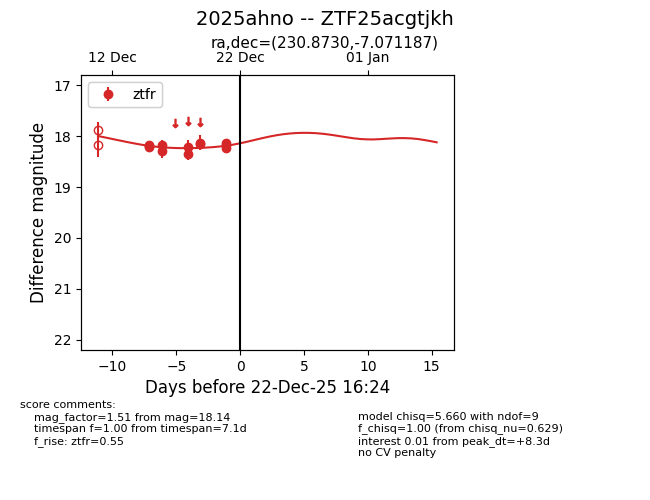
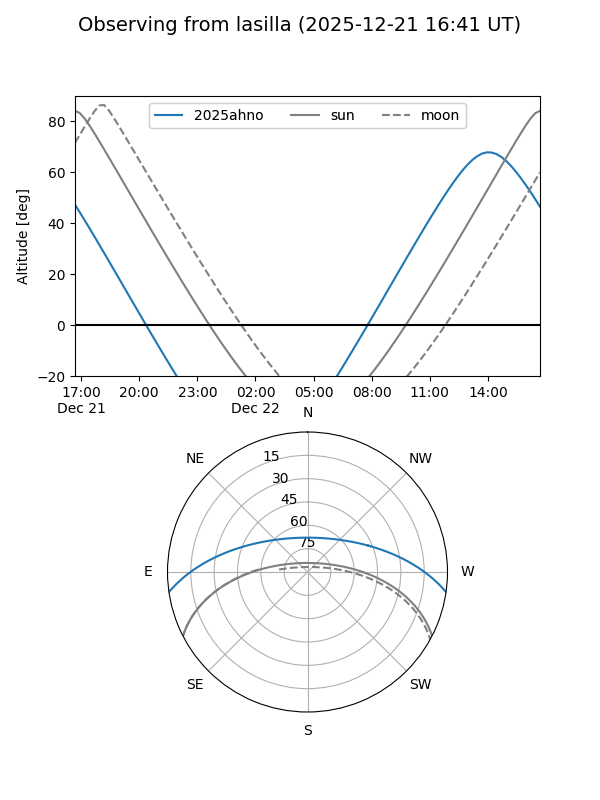
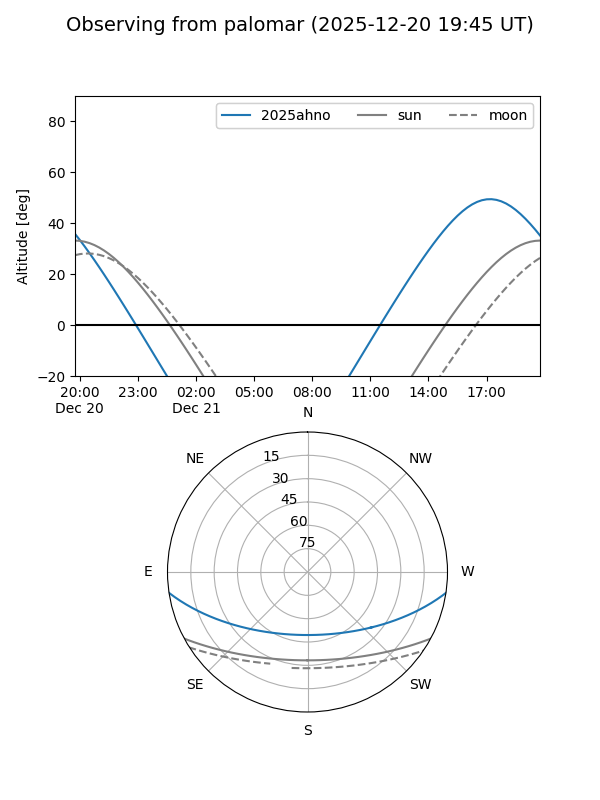
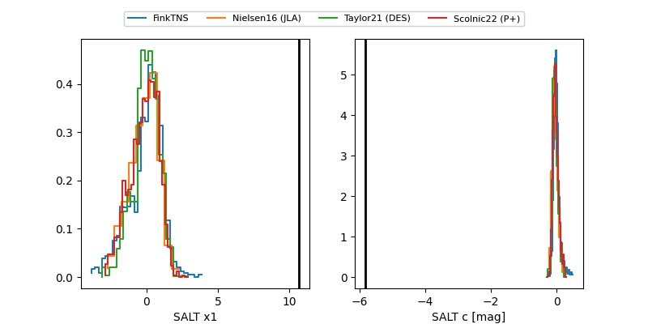

2025ahno
Target 2025ahno at 2025-12-22 21:36
Aliases and brokers:
FINK: fink-portal.org/ZTF25acgtjkh
Lasair: lasair-ztf.lsst.ac.uk/objects/ZTF25acgtjkh
ALeRCE: alerce.online/object/ZTF25acgtjkh
TNS: wis-tns.org/object/2025ahno
YSE: ziggy.ucolick.org/yse/transient_detail/2025ahno
alt names
ZTF25acgtjkh (ztf,fink_ztf)
2025ahno (tns,yse)
Coordinates:
equatorial (ra, dec) = 230.8730,-7.07119
equatorial (HMS+DMS) = 15:23:29.51,-07:04:16.27
galactic (l, b) = (355.6023,+39.77132)
Flags:
Photometry:
last ztfr=18.25
13 ztfr detections
Lightcurve

Visibility


Additional plots
